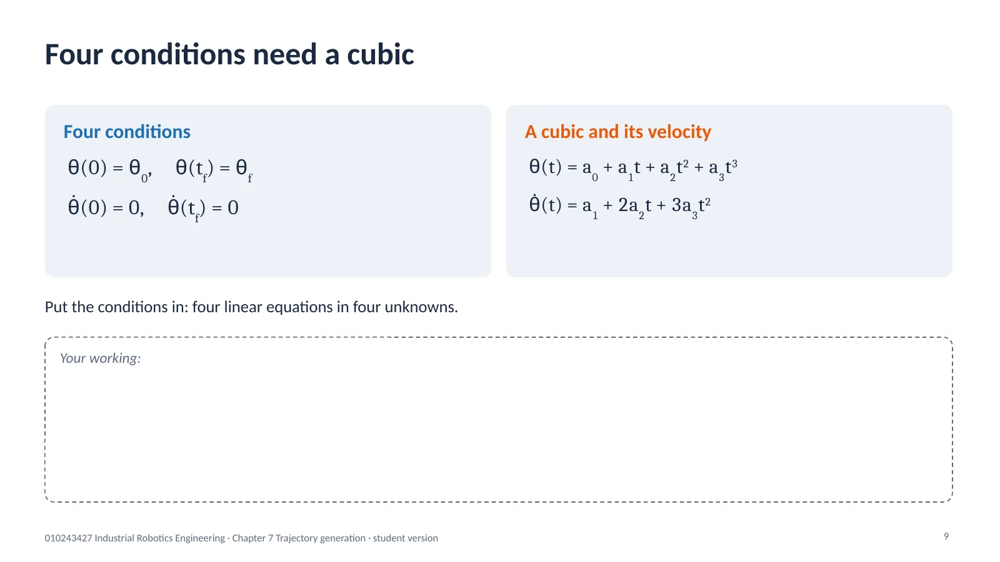
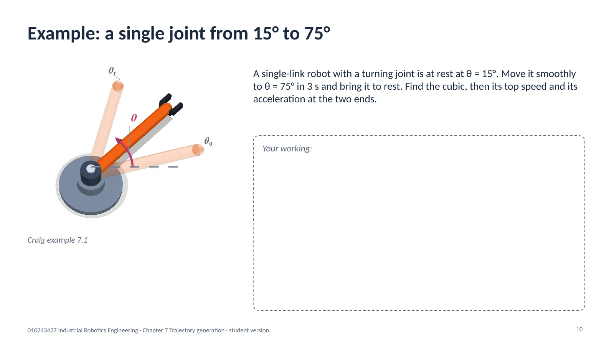
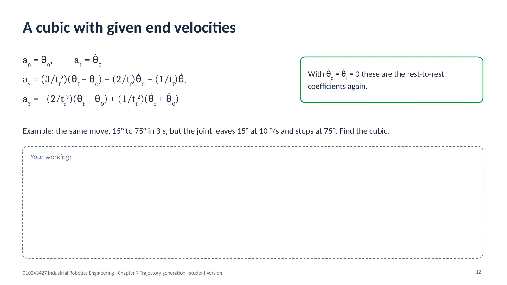
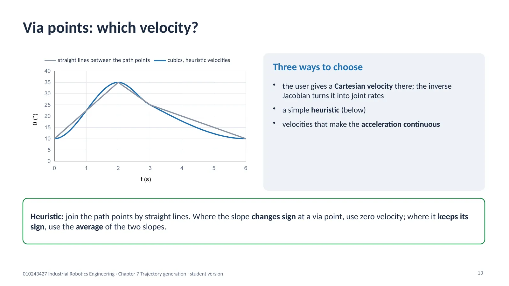
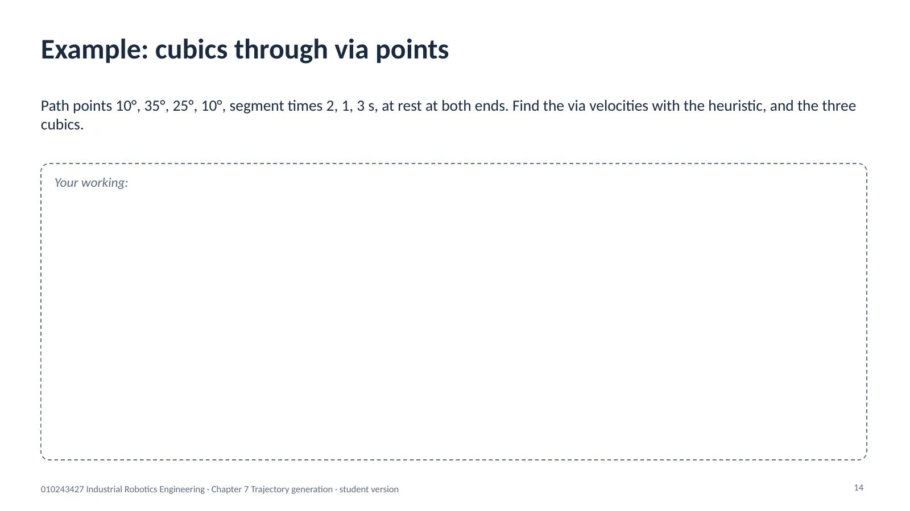
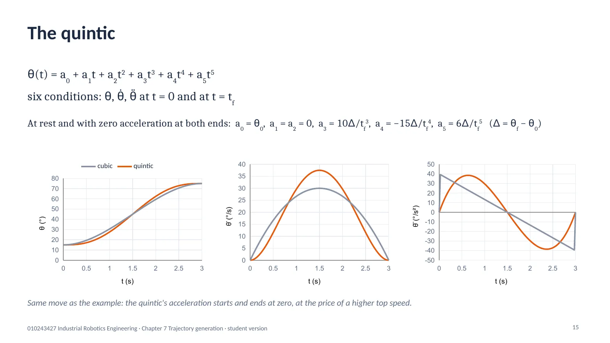

หน้า 7.1 แยกเส้นทาง (path) ออกจากวิถีการเคลื่อนที่ (trajectory): วิถีบอกว่าข้อต่อแต่ละข้ออยู่ที่มุมเท่าไร ณ เวลาใด หน้านี้สร้างวิถีของข้อต่อหนึ่งข้อด้วยพหุนามของเวลา เริ่มจากพหุนามกำลังสาม (cubic) ซึ่งมีสัมประสิทธิ์ 4 ตัว พอดีกับเงื่อนไข 4 ข้อ คือมุมและความเร็วที่ต้นและที่ปลาย จากนั้นให้ความเร็วที่ปลายไม่เป็นศูนย์ ต่อพหุนามหลายช่วงผ่านจุดผ่าน (via point) และจบด้วยพหุนามกำลังห้า (quintic) ซึ่งกำหนดความเร่งที่ปลายได้ด้วย ทุกโจทย์มีภาพสามมิติของข้อต่อหมุนหนึ่งข้อ คู่กับกราฟตำแหน่ง ความเร็ว และความเร่งเทียบกับเวลา กด ▶ เพื่อดูข้อต่อเคลื่อนที่ หน้านี้ครอบคลุมสไลด์หน้า 9–15 มี 4 โจทย์
Page 7.1 told a path from a trajectory: a trajectory says where every joint is at every instant. This page builds the trajectory of one joint from polynomials in time. A cubic has four coefficients, just enough for four conditions: the angle and the velocity at the start and at the end. Then the end velocities are no longer zero, several cubics are joined through via points, and the quintic sets the accelerations at the ends as well. Every problem has a 3-D view of a single turning joint beside plots of its position, velocity and acceleration against time; press ▶ to watch the joint move. It covers slides pp. 9–15, with 4 problems.




